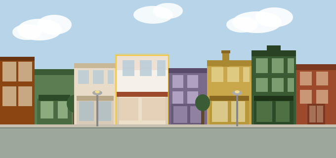
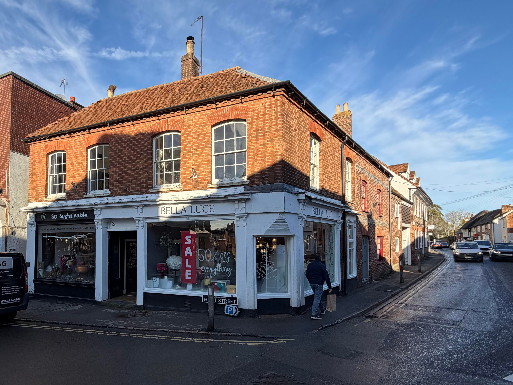
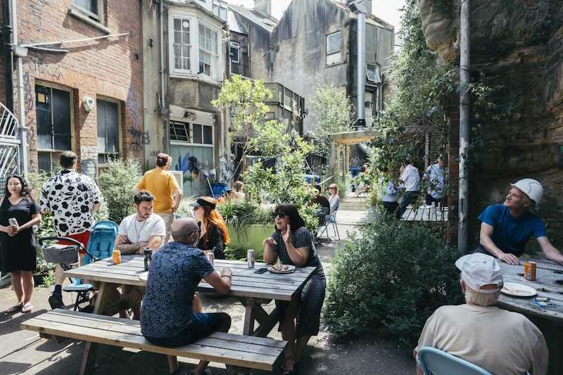
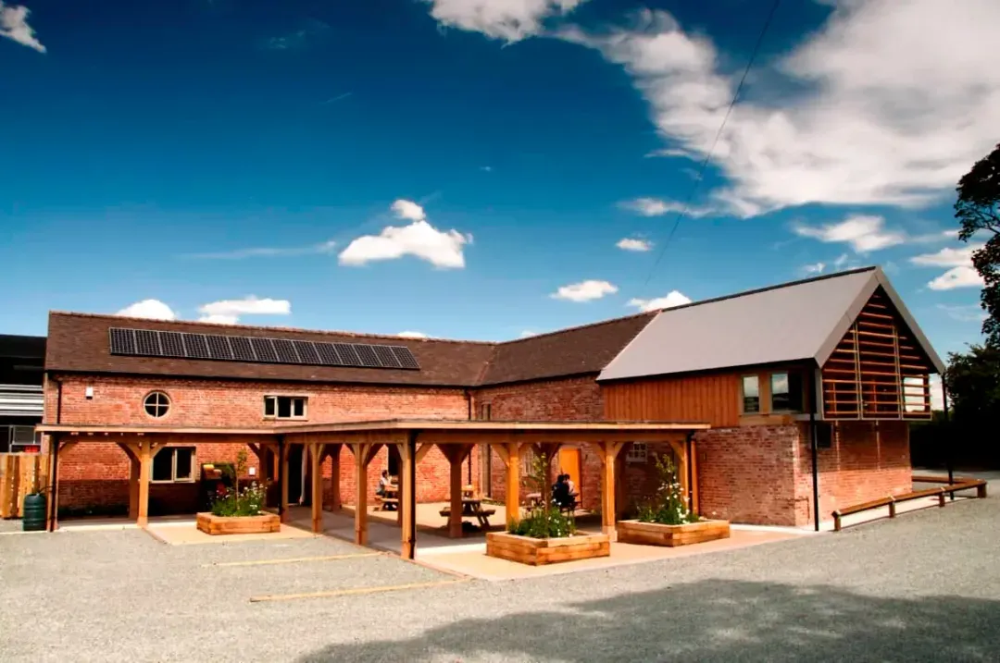
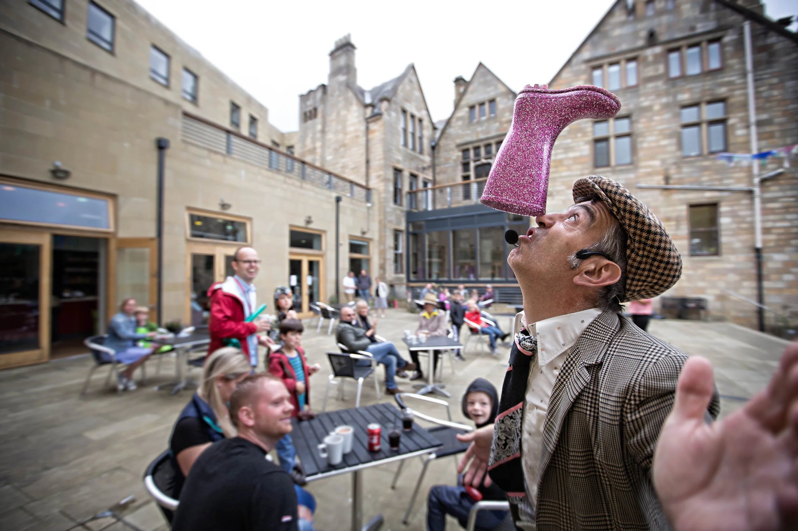

Not owned by a distant landlord. Not vulnerable to speculation. Held in trust — building by building — for everyone who lives here, now and for generations to come.
About the trust
Watlington has something rare: a High Street that still works. The Granary Deli, the Spire & Spoke, SO Sustainable, Calnan Brothers — independent businesses that have become part of the fabric of the town. But the buildings they occupy are vulnerable. When freeholds change hands, rents rise and uses change.
Watlington Community Property Trust exists to change that. We are a Community Benefit Society in formation — a legal structure that allows communities to own assets collectively, governed by their members, and protected from being sold for private gain.
Our mission is to acquire commercial freeholds on Watlington High Street and hold them permanently in community ownership, letting them at fair rents to tenants who benefit the town.
See how it works"Not owned by distant investors. Not at the mercy of the market. Owned by the community, run for the community."
Once a property enters the trust, an asset lock means it can never be sold for private gain. It belongs to Watlington permanently.
Our purpose
We raise funds through a community share offer to buy the freehold of commercial buildings on the High Street outright.
An asset lock embedded in our rules means our properties can never be sold on for private profit. Once in the trust, always in the trust.
Rents fund running costs, debt servicing, and future acquisitions. Properties let to local independent businesses and enterprises that give Watlington its character.
Anyone can invest and become a member. Every member has one vote regardless of investment size. Democratic by design.
First acquisition target

The people behind the property
2 High Street has been in the Carlisle family for decades. Mark Carlisle, a chartered surveyor, land agent, and one of the most respected property professionals in South Oxfordshire, understood instinctively what makes a high street work. He knew that independent businesses need landlords who take a long view: fair rents, continuity, and a genuine interest in the people on the other side of the lease.
Mark spent his career working with families, estates, and communities across the region, and brought that same sensibility to his own property. He and his wife Ming were landlords who supported their tenants and cared about what happened on Watlington's High Street. That approach made it possible for the businesses here to put down roots.
Mark died in November 2025. Ming lives with Alzheimer's at Sanctuary Care Home in Watlington. In bringing 2 High Street into community ownership, we hope to honour what they stood for as landlords, and to make permanent the kind of stewardship they practised for so long.
We are grateful to the Carlisle family for their support of this project.
The journey
We are a Community Benefit Society in formation, with FCA registration in progress. Here is where we are.
WCPT has been established with founding members. FCA registration as a Community Benefit Society is in progress, supported by Plunkett UK.
We're growing a founding community of people who want to see Watlington's high street protected. Register your interest to be first to hear about our share offer.
We will open a regulated community share offer — invest from £500, withdrawable after 3 years subject to the trust's financial position.
Using funds raised, we complete the freehold purchase — placing it under permanent community ownership, protected by an asset lock.
Rental income and future share offers fund further acquisitions, each one strengthening the trust's balance sheet. One day: a high street that is genuinely ours.
Your stake
A statutory asset lock means no property can ever be sold for private gain — now or in future.
Community investment, not a donation. Withdrawable after 3 years subject to the trust's financial position.
Every shareholder has equal say regardless of investment size. Democratic by design.
Rents fund running costs, debt servicing, and future acquisitions. Built to compound over time.
The team
Three people with deep roots in Watlington and the experience to make this happen.
Owner of SO Sustainable on the High Street and Watlington Business Association member. Served on Watlington Parish Council and helped secure community ownership of the First Steps Family Hub when county funding was withdrawn.
Landlord of the Spire & Spoke and Chair of Watlington Business Association. Previously raised £400,000 through a community share issue for a Drury Lane venue — bringing that experience directly to this project.
Solicitor with deep family roots in the Watlington area and current landlord of 2 High Street. Choosing to bring the property into community ownership rather than sell privately.
Get involved
We are at an early and important stage. Every expression of support strengthens our case.
Sign up for updates and be first to hear when our share offer launches.
Register below →When our share offer launches, invest from as little as £500 and become a co-owner with a vote at our AGM.
Get notified →Tell your neighbours and local networks. The more people who know, the stronger the case we can make.
Contact us →We welcome applications from people with skills in finance, law, property, or community development.
Get in touch →Stay in the loop
Leave your details and we'll keep you updated on our progress and let you know when the share offer is ready.
Updates about WCPT only. No third parties. Unsubscribe any time.
It can be done
WCPT is part of a growing movement of community ownership across the UK. These organisations show what is possible.

Photo comingSince 2014, Hastings Commons has brought over 8,500 square metres of previously derelict floor space into community ownership across a cluster of buildings in the town centre — providing affordable workspaces, homes, and social spaces in perpetuity.
Visit hastingscommons.com →A community benefit society formed by local people to shape the regeneration of Somerleyton Road in Brixton. Over 1,200 members have joined to ensure the community has a lasting stake in the future of their neighbourhood.
Search Brixton Green →
Photo comingOne of England's first community land ownership projects. In 2006, over 8,000 shareholders came together to buy Fordhall Organic Farm — saving it from industrial development and placing it in community hands permanently.
Visit fordhallfarm.com →
Photo comingIn 2010, the community acquired the Grade II listed Victorian Town Hall from Calderdale Council on a 125-year lease. The association raised £3.7m to transform it into a thriving centre for community and creative enterprise — entirely self-funded through trading.
Visit hebdenbridgetownhall.org.uk →